Next: 参考文献 Up: JASPについて Previous: カウントデータの分析
ここでは、ピグマリオン効果（教師期待効果）に関する19個の研究結果をまとめたデータ https://okumurin.github.io/jasp/Raudenbush_Bryk_1985.csv を利用することにする。
下の図は、このデータをJASPで開いたものである。 このデータには、4つの変数が格納されている。
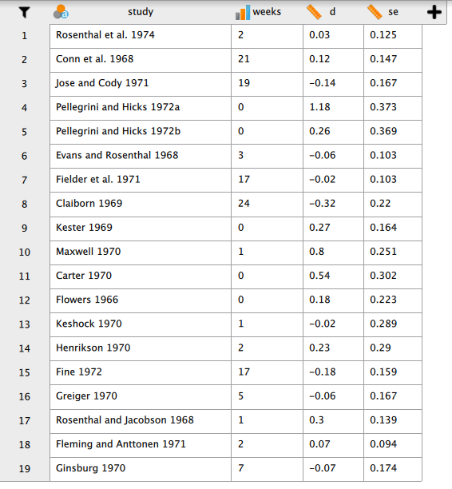
ピグマリオン効果に関しては、それを初めて検証した Rosenthal による解説[5]に詳しい。
もともとは、小学校6学年の児童について非言語式知能検査を実施し、その結果とは無関係にランダムに選ばれた約2割の児童（実験群）について、それぞれのクラスの担任教師に知能検査の結果から今後8週間で目覚ましい知的能力の向上が見られるだろうとフィードバックを返したところ、実験群の児童についてはそのようなフィードバックがなかった児童（統制群）に比べて、8週間後に実施された同じ知能検査のIQが平均的に大きく伸びていた、というものである。 ここでの効果量 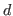 は、この8週間でのIQの平均的伸びについて、実験群と統制群の差を標準化したものである。
インパクトの強い研究だっただけに、ピグマリオン効果に関しては繰り返し追試が行われてきている。 データに含まれる変数 weeks（週数）については、教師が生徒と知り合って間なしであるほどピグマリオン効果は顕著に見られるのではないか、という仮説を検証するために各研究の特性として入れてあるものである[4]。
分析メニューから [Meta Analysis] を選択すると、[Classical Meta Analysis] という分析実行画面が表示される。
[Method] にはデフォルトで [Restricted ML] が入っている。 これは、変量効果モデルで分析する際に研究間分散 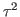 を推定する方法として「制約つき最尤法」を採用する、というものである。 より古典的なモーメント法 [DerSimonian-Laird] が用いられることもあるが、ここではデフォルトでよいだろう。 もし固定効果モデルで分析するのであれば、ここを [Fixed Effects] に変更しておけばよい。
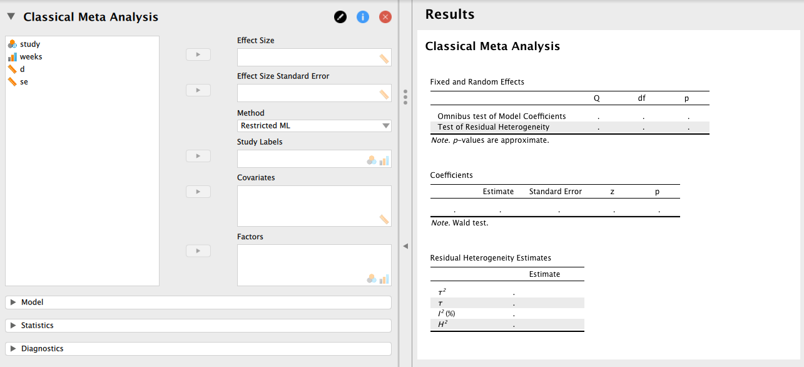
次に、分析に用いる変数を左のボックスから右のボックスに移動させる。 今の例では、[Effect Size] に d を、[Effect Size Standard Error] に se を移動させればよい。 また、[Study Labels] に研究ID（study）を指定しておけば、forest plot で結果を見るときに便利である。
下が、統合結果の出力である。
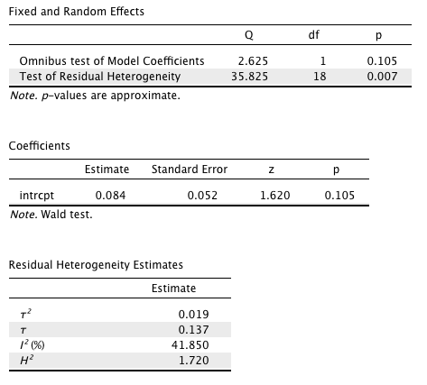
表 [Fixed and Random Effects] の [Test of Residual Heterogeneity] に等質性検定の結果が表示されている。 この例では、効果量の等質性仮説は棄却される（ 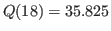, 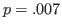）。 従って、デフォルト通り変量効果モデルで分析するという判断でよいだろう。
表 [Coefficients] の [intrcpt] が統合された効果量の値と検定結果である。 分析メニューの [Statistics] を開いて [Confidence intervals] にチェックを入れれば、統合された効果量の信頼区間がこの表に追加される。 この例では、実験群と統制群の差は有意ではないという結果になっている（ 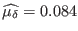, 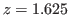, 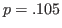, 95% CI [ 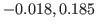]）。
表 [Residual Heterogeneity Estimates] には、研究間分散および効果量の非等質性に関する情報が記載されている。 効果量の研究間標準偏差 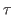 は 0.137 と推定されている。 ということは、先ほどの統合結果と合わせると 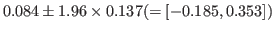 の範囲に大体 95% の効果量が分布していると考えればよいことになる。 もとのデータで報告されている効果量と比べてどうだろうか。 また、 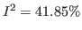 と推定されている。信頼区間が広いので正確な見積もりは難しいが、研究結果に見られるばらつきは、ある程度研究間での手続きの差異に帰することができるといえそうである。
分析メニューの [Statistics] にある [Forest plot] にチェックを入れると、各研究の信頼区間と統合の重み、最終的な統合結果を視覚的にチェックできる。
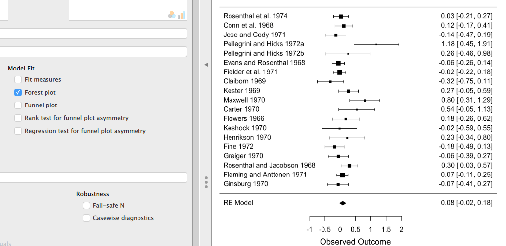
同様に、その下の [Funnel plot] にチェックを入れると、公表バイアス検出のための funnel plot が表示される。 Funnel plot の非対称性を Egger 検定により検証するのであれば、[Regression test for funnel plot asymmetry] にチェックを入れるとよいだろう。
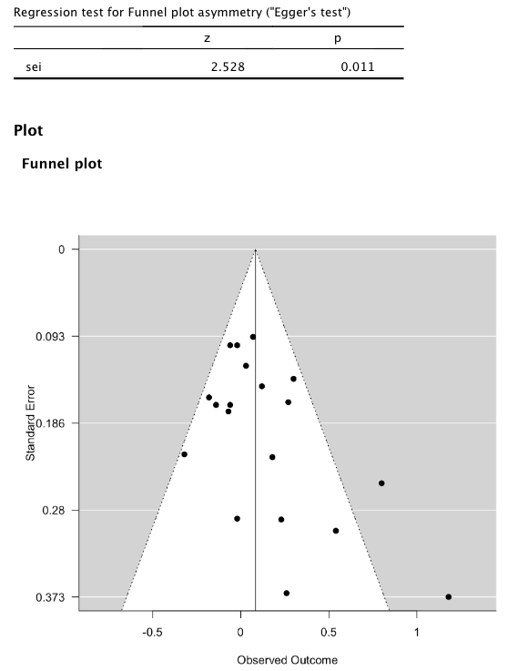
Funnel plot の左下がごそっと抜けていること、Egger 検定が有意になっていることから、公表バイアスがどうやらありそうである。
分析メニューの [Plots] から [Trim-fill analysis] と [Fail-safe N] にチェックを入れると、公表バイアスの評価が行える。 （ここではもともと統合結果が有意ではなかったので、fail-safe 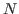 を出すことには特に意味はない。）
下の図は、潜在的な効果量を埋めた後の forest plot と funnel plot を示したものである。 合計で3つの効果量が対称性を保つよう左側領域に埋められ、これによって補正された統合効果量は 0.03 となっている。
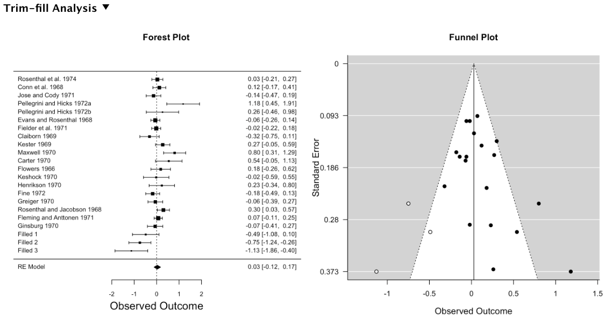
これをもって、公表バイアスの影響を大きいと見るかどうかは議論の分かれるところかもしれない。 ここでは、もともと統合した効果量自体が 0.08 とかなり小さめであったこと、補正しても 0.05 程度しか変化しないこと、またピグマリオン効果の追試はもともと否定的な考えを持つ研究者によって行われてきたことなどを考えて、公表バイアス自体はほぼ無視できるものとしておこう。
非等質性の評価において、研究間での結果のばらつきはただの誤差によるものだけではなく、手続きの違いなど実質的な差異に起因する部分も一定程度あるという結果が得られていた。 そこで、ピグマリオン効果の大きさが何によって左右されるのか、具体的に見ていくことにしよう。
ここでは、教師が児童と知り合ってからの週数（weeks）を共変量としたメタ回帰分析を実行することにする。 手続きは簡単である。共変量 weeks を左のボックスから右の [Covariates] に移動させればよい。
下がメタ回帰分析の結果を示したものである。
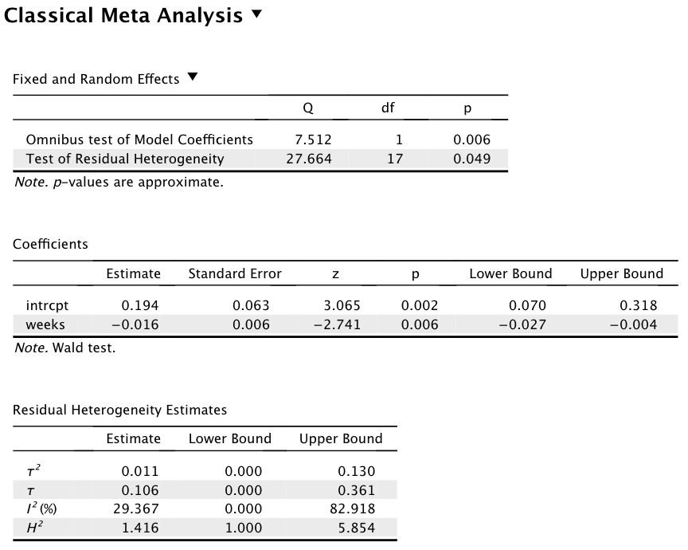
まず、[Coefficients] の [intrcpt] を見ると、統合された効果量は統計的に有意となっている（ 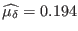, 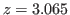, 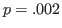, 95% CI [0.070, 0.318]）。 これは、weeks を独立変数、効果量を従属変数とした回帰分析であるから、ここに示された切片は「weeks=0」すなわち教師と児童が初対面の状態でIQの伸びに関するフィードバックを得た場合の標準化された平均の差（ピグマリオン効果の大きさ）に相当する。 統計的に有意ではあるが、信頼区間は無視できるレベルから中程度に満たないレベルとなっており、そこまで大きいというわけではなさそうである。
同じく、[weeks] は傾き（回帰係数）に相当する結果である。 すなわち、教師と児童が初対面の状態から weeks が1増えるごとに（つまりフィードバックのタイミングが初対面から1週間遅れるごとに）ピグマリオン効果がどれくらい大きくなるか、を表す量ということになる。 この場合、係数は有意な負の値となっているから、教師が児童のことをよく知るようになればなるほどピグマリオン効果は消滅していく傾向にあるということがわかる。 切片と比較すると、おおよそ児童と初めて会って10週間程度経過すれば、ピグマリオン効果はほぼ見られなくなるということになりそうである。
さて、等質性に関する評価はどのようになっているだろうか。 まず等質性検定の結果は、共変量投入前と同様、統計的に有意である（ 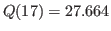, 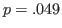）。 ということは、効果量の間には週数の違いでは説明できないような非等質性が残っているということになる。 ただし、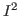 の推定値は小さいので、こうした非等質性は偶然的な誤差に起因するものかも知れず、これ以上結果を実質的に左右する共変量や研究を分けるカテゴリを見つけることは難しいかも知れない。
Taichi Okumura